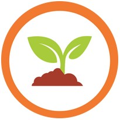
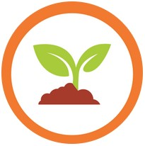

Environmental Biology Concepts
Current Understandings of Biodiversity, Ecology, & Conservation Biology
 View OutcomeHello, Welcome to my biology 101 portfolio website! Please click on any of the 9 "view outcome" buttons to look into each section, there will be a back button to this homepage found at the bottom of each one. Within each outcome, you will find an overview of the outcome, what I did to master the topic, and 2-3 projects, drawings, or quiz questions and answers. Additionally below each of the pictures there is an additional description specific to each item. In the future I hope this website can be proudly added to my larger CS portfolio I will be working on.
Current Understandings of Biodiversity, Ecology, & Conservation Biology
 View Outcome